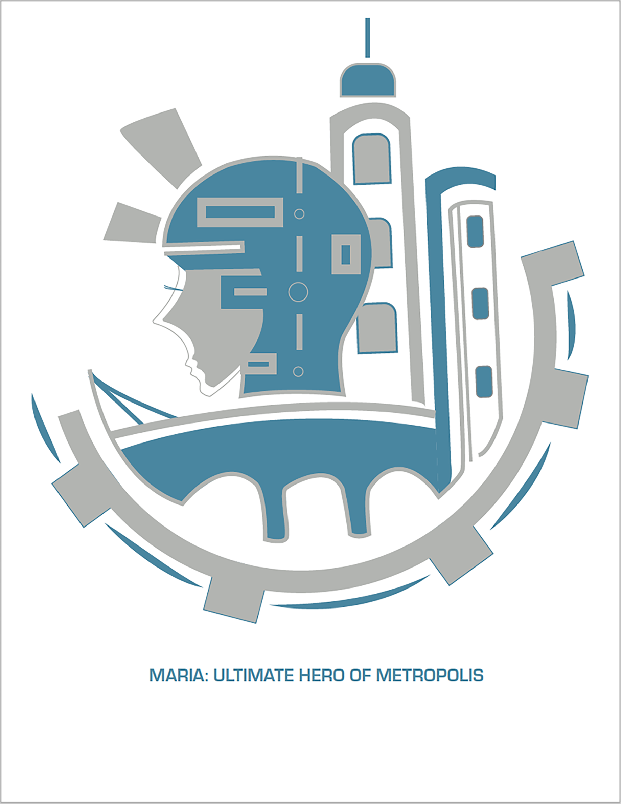
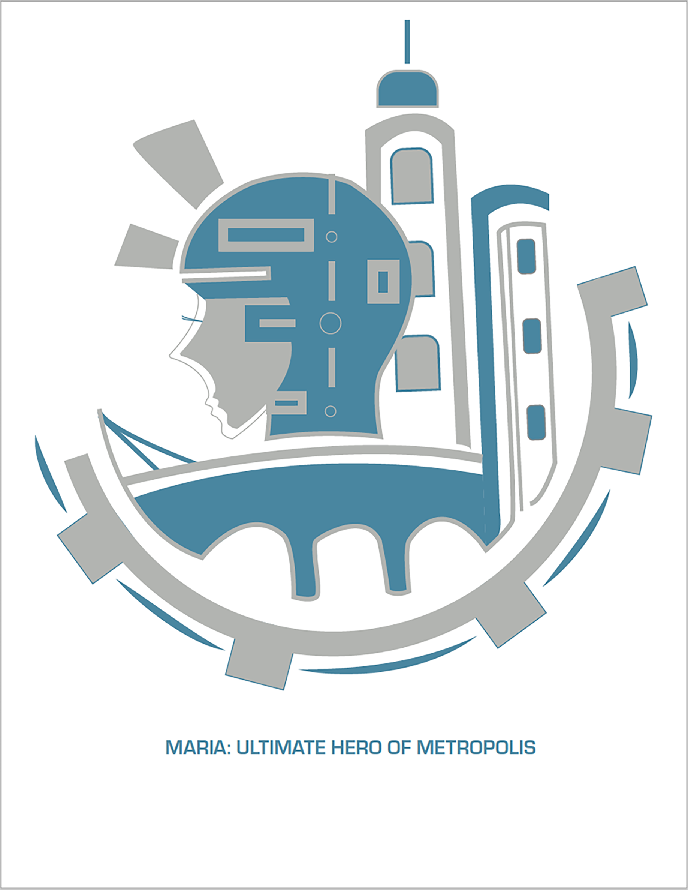

Maria: The Ultimate Hero of Metropolis
A symbol representation of the movie, Metropolis. Maria, the Robot is the main character bringing together the lbourers and the elitists of the city. The high towers was used to represent the elitists and the labourers, the mechanical gears. A futuristic concept that was developed in 1927, is represented using metallic hues inclined towards blue to also subtly hint at the imaginative world created by the director.

The Birds